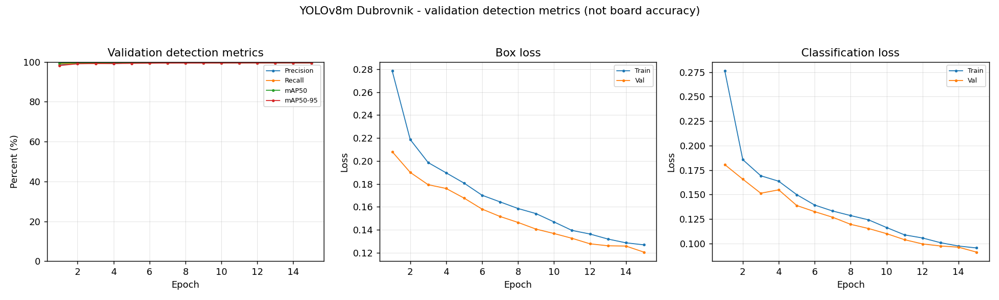
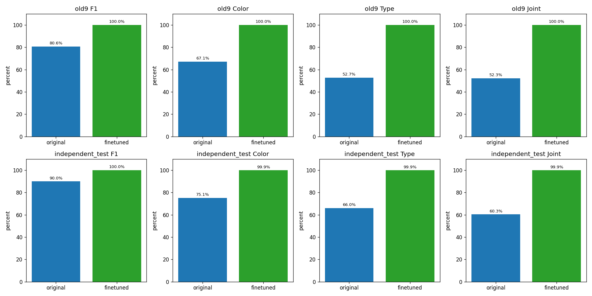

Complete games
2 / 3
Run results: 6/10, 10/10, 10/10
The project now includes a trained piece detector and an initial virtual manipulation workflow. Watch SO-ARM101 complete ten consecutive simulated plies, then explore the recorded vision benchmark below.
Synthetic vision · PyBullet motion prototype · Ideal fixed grasp
Recorded run random2 — 10/10 plies completed. Each ply includes pickup, transport, release, settled board support, and a checked return home in the same persistent scene. Ten plies means ten halfmoves.
89.7-second recorded-pose replay, variable playback speed. All ten action and home segments are retained. No new physics was run to export this video.
All 26 actions that entered physical manipulation completed release, settled support,
and checked home, with no observed drops or unintended collisions. The first game stopped before
motion on d4 → a1 because candidate/placement-IK preflight failed.
Model assumption: real bilateral closure is followed by an ideal fixed grasp that constrains both relative translation and rotation until release. Native force readings remain unchanged. This is a known-state IK/OMPL workflow test, not live vision-driven manipulation, a VLA policy, or a hardware reliability result.
Simulation protocol and limitations · Download video · Recorded result audit
A YOLOv8m chess piece detector was fine-tuned on synthetic RGB scenes built from one exact
mesh set, ezeeone_Dubrovnik_1960_set_02_stls. This page reports
recorded, static model predictions — no live inference, no camera, no upload.
Synthetic RGB scenes · Known board corners · Piece detector only
Metrics are computed on the full selected dataset and do not change when the example preview below is filtered.
Training data: 3,000 synthetic RGB images covering 375 distinct board positions (8 views per position). The positions were split by board position — not by image — into 2,096 train, 448 validation and 456 test images. Three old mesh layouts were excluded from training so the model could not memorise them.
Model: YOLOv8m initialised from ChessReD2K weights, fine-tuned for 15 epochs with AdamW; training loss combines CIoU + BCE + DFL. Scenes are rendered procedurally in VTK with 50 mm squares and a 78 mm king, with no board dynamics.
| Metric | Original | Fine-tuned |
|---|


All 14 fine-tuned failure frames are available in the held-out explorer; low-angle views dominate the residual errors.
The explorer's selection is the union of the first 6 test frames, 12 evenly spaced frames and all fine-tuned failures; metrics above always reflect all 456 test images.
Demo data could not be loaded. Make sure assets/demo-data.js is present next to
this page and is loaded before assets/app.js.